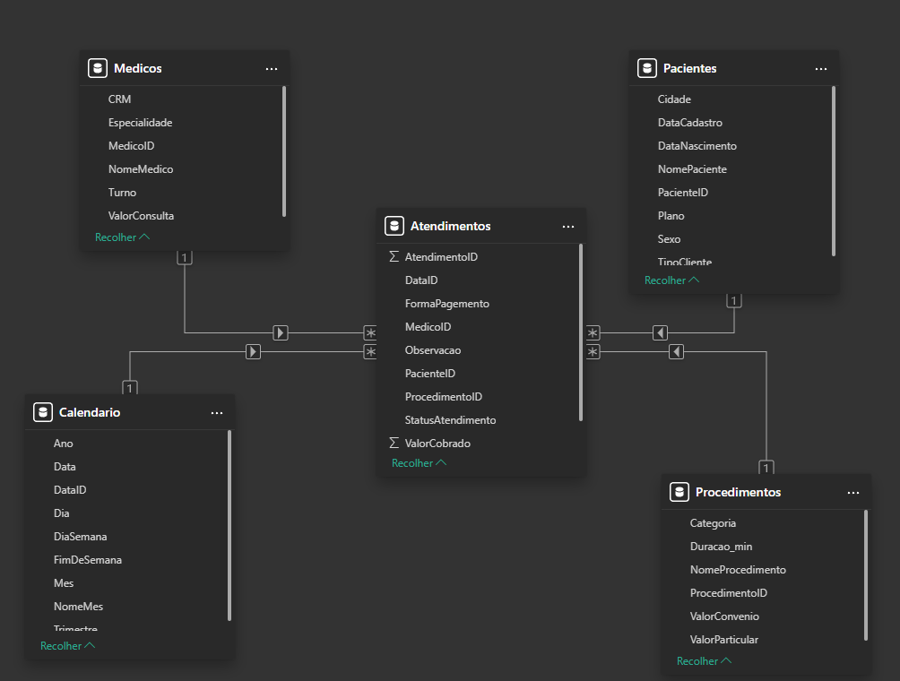
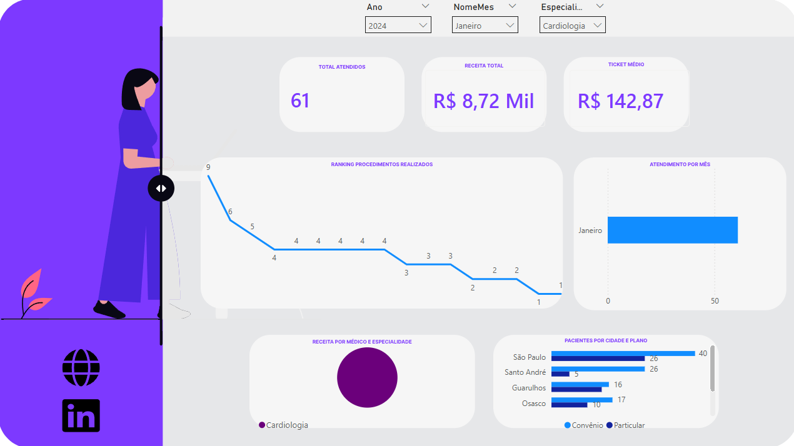
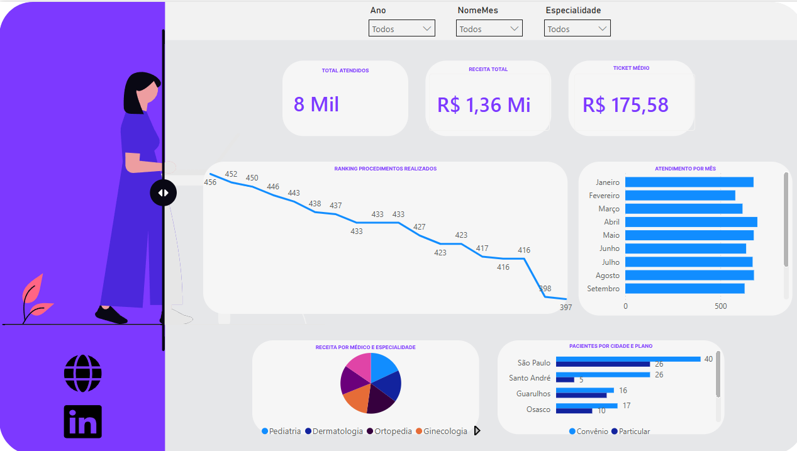

O que é o Projeto
Este projeto é um dashboard de Business Intelligence desenvolvido no Power BI para acompanhar os principais indicadores operacionais e financeiros de uma clínica médica ao longo de dois anos completos · 2023 e 2024.
O objetivo foi praticar modelagem dimensional com um cenário realista do setor de saúde, trabalhando com dados de pacientes, médicos, procedimentos e atendimentos em um modelo estrela bem definido. O dataset foi construído do zero com 7.738 registros de atendimentos simulados, distribuídos entre consultas, exames e procedimentos de seis especialidades médicas.
O painel responde perguntas práticas da gestão: qual especialidade gera mais receita? Qual médico tem maior taxa de cancelamento? Como a receita de convênio se compara à de pacientes particulares? Qual mês concentrou o maior ticket médio?
Registrados
Modelo Estrela
(2023 – 2024)
Cinco Tabelas, Um Modelo Coeso
O dataset foi organizado em cinco tabelas com nomes em português e colunas intuitivas, facilitando a compreensão do modelo mesmo para quem está iniciando no Power BI.
Tabela Fato · Atendimentos
A tabela central do modelo. Cada linha representa um atendimento registrado na clínica, contendo a data, o paciente, o médico responsável, o procedimento realizado, o status (Realizado, Cancelado ou Faltou), a forma de pagamento (PIX, Cartão Débito, Cartão Crédito, Dinheiro ou Convênio), o valor cobrado e o valor efetivamente recebido.
Tabelas Dimensão
- Pacientes: 200 pacientes cadastrados com nome, data de nascimento, sexo, cidade (São Paulo, Guarulhos, Campinas, Osasco, Santo André e São Bernardo do Campo), plano de saúde (Particular, Unimed, Bradesco Saúde, SulAmérica e Amil) e tipo de cliente.
- Médicos: 12 médicos distribuídos em 6 especialidades · Clínico Geral, Cardiologia, Ortopedia, Dermatologia, Pediatria e Ginecologia · com turno de trabalho e valor de consulta particular de cada profissional.
- Procedimentos: 18 itens catalogados em três categorias · 6 consultas (Clínica, Cardiológica, Ortopédica, Dermatológica, Pediátrica e Ginecológica), 7 exames (Eletrocardiograma, Raio-X, Ultrassom, Hemograma, Glicemia, Teste Ergométrico e Ecocardiograma) e 5 procedimentos (Curativo, Infiltração, Pequena Cirurgia, Inalação e Aferição de Pressão). Cada item possui valor distinto para paciente particular e para convênio.
- Calendário: tabela de datas cobrindo todos os dias de 2023 a 2024, com colunas de dia, mês, nome do mês, trimestre, ano, dia da semana e flag de fim de semana · base para toda a inteligência de tempo do modelo.
Star Schema e Medidas DAX
O modelo segue o padrão estrela (star schema): a tabela Atendimentos
fica no centro como tabela fato, conectada às quatro dimensões por chaves inteiras
simples · PacienteID, MedicoID, ProcedimentoID
e DataID.
Essa estrutura garante que qualquer filtro aplicado em uma dimensão · seja por especialidade, ano ou mês · propague corretamente para a tabela fato, sem relacionamentos complexos ou tabelas intermediárias.
Principais Medidas DAX
-
Receita Total: soma do
ValorRecebidofiltrando apenas os atendimentos com status Realizado. - Ticket Médio: receita total dividida pelo número de atendimentos realizados · calculado dinamicamente por médico, especialidade ou período.
- Taxa de Cancelamento: percentual de atendimentos com status Cancelado ou Faltou sobre o total agendado no período.
- Receita Particular vs. Convênio: comparativo de receita entre os dois modelos de atendimento, evidenciando a diferença de margem por tipo de paciente.

O que o Dashboard Responde
O painel foi construído para responder às perguntas mais relevantes para a gestão de uma clínica médica, com visuais interativos e filtros cruzados entre todas as dimensões do modelo.
Análises Disponíveis
- Receita mensal e acumulada com comparativo entre 2023 e 2024.
- Desempenho por especialidade · quais especialidades geram mais receita e concentram maior volume de atendimentos.
- Ranking de médicos por receita gerada, quantidade de atendimentos e ticket médio individual.
- Procedimentos mais realizados · distribuição entre consultas, exames e procedimentos por volume e valor gerado.
- Taxa de ocupação e ausência · percentual de pacientes que compareceram, cancelaram ou faltaram sem aviso.
- Distribuição por forma de pagamento · PIX, cartão de débito, cartão de crédito, dinheiro e convênio.
- Perfil dos pacientes · distribuição por cidade, plano de saúde e sexo.


O que aprendi com este projeto
Construir o dataset do zero foi a parte mais enriquecedora do projeto. Pensar em quais tabelas criar, quais colunas seriam necessárias e como garantir consistência nos relacionamentos antes mesmo de abrir o Power BI reforçou que a qualidade de um dashboard começa muito antes da camada visual.
As medidas DAX como Ticket Médio e Taxa de Cancelamento evidenciaram como a mesma
fórmula pode gerar respostas completamente diferentes dependendo do contexto de filtro
aplicado · comportamento que exige atenção ao usar funções como CALCULATE
e DIVIDE corretamente.
O projeto também reforçou a importância de nomear tabelas e colunas de forma clara, organizar o modelo pensando no usuário final e documentar o processo · habilidades que vão além do conhecimento técnico da ferramenta e que fazem a diferença em um contexto profissional.